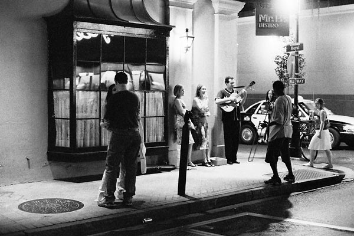
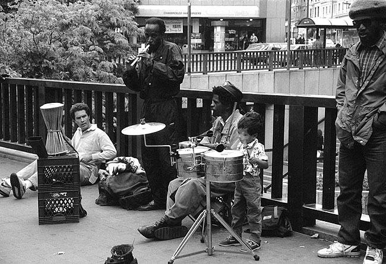
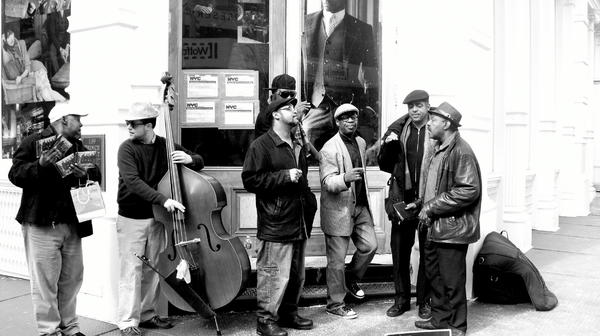

Street music got talent
-To explore the spirit of music



Home
Rank
About Us
Contact Us
Street performance dates back to
antiquity
, and occurs all over the world. This art form was the most common means of
employment
for entertainers before the advent of
recording
and personal electronics.
What will happen when street music meets social networking technologies?
Explore it!